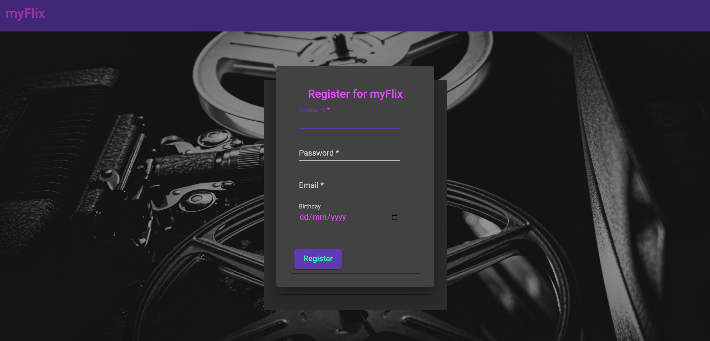
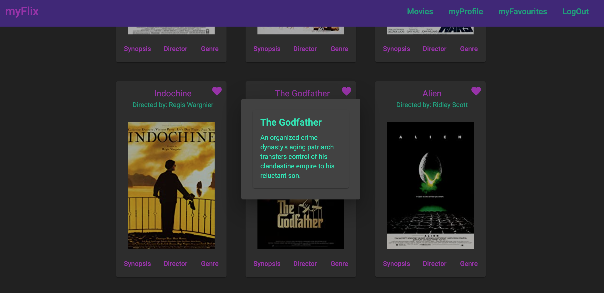
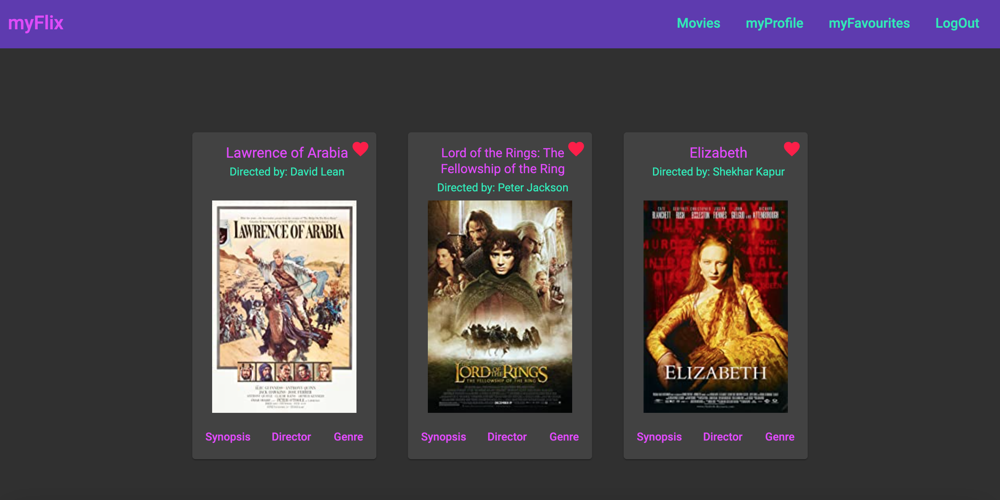
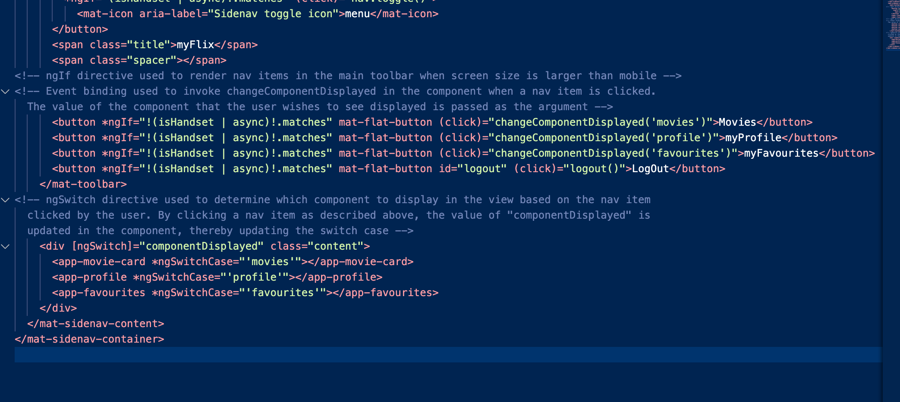
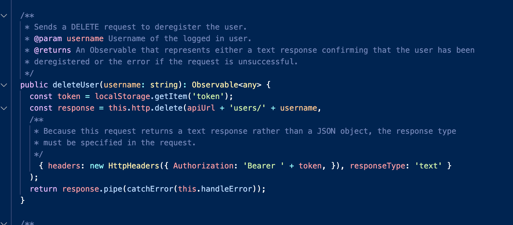

myFlix Angular was the final project that I completed as part of my Full-stack Web Development course at CareerFoundry.
I had previously built a back-end for a movie application called the myFlix API, which I'd then connected to a front-end
built using React to create a complete movie app.
The purpose of this project was to rebuild the client-side of the app using an alternative framework: Angular.
My role
This was an exciting project that offered the opportunity to apply all the experience and knowledge that I had accumulated
throughout my course whilst simultaneously learning a new framework.
As my final project I wanted to test myself by tackling any technical challenges using my own research, as
practice for future projects once my course ended.
Summary of project requirements
Create a complete movie app using the myFlix API with a front-end built using Angular
Include a welcome page where users can register and log in, a movie view where logged in users can see details of
all the movies in the database and a profile page where they can edit their details or delete their profile
Display the movies as cards with summary details and buttons that, when clicked, provide further details about
the movie plot, genre and director
Give users the ability to add movies to, or remove movies from, favourites by clicking on a heart icon on a movie’s card
Style the app using Angular Material to create an attractive, responsive design
Duration
The project took about a month including time off over Christmas and some days spent on research. Because Angular uses TypeScript
I watched YouTube tutorials to learn the fundamentals of the language in more depth as preparation.
I also watched tutorials on Angular to supplement my course materials and ensure I had a good grasp of the core concepts before
beginning the development work.
Building the app itself took around two weeks of intense programming work, with a few late nights towards to the end to ensure
I hit my deadline!

img1: myFlix Angular registration view
Step 1: Learning Angular fundamentals
The first part of the project essentially involved learning how to create an Angular app, how to use the Angular Cli to create
components and services and the core concepts and tools of Angular including:
how Angular applications are constructed using modules and components
the structure of components, which consist of TypeScript files to hold logic and HTML templates to define views
how to pass data between TypeScript files and templates using data binding techniques
how to change the appearance and structure of elements in templates using directives
I also reviewed the key components of Angular Material that I would need to build the UI including:
cards - containers I'd use to display the movie information
dialogs - modals that could be used to display a component within another component;
snackbars - pop up messages (akin to alerts) that could be used to communicate with users
Finally I learned about services, which are a way to write functions that can be called by multiple components within an
app without duplicating code.
I created a service to contain the HTTP requests to the myFlix API that would be made by various
components within my app to provide movie and user data.
Now I had the technical know-how and the mechanism to retrieve the data I needed to start building out my components.
Step 2: Building the first components
Using the techniques learned so far, I created a registration component, I did this by:
building a registration form that used the ngModel directive to bind values input by the user to the component
using event binding to trigger a registration request to the API (via the service I had just created)
when the form was submitted
containing the component in a dialog that was opened from inside the main app component.
Following the same process, I next created a login component, this time sending the API request to the
login endpoint.
I repeated this pattern a third time to build my main movie view, displaying the movies as cards in line with the requirements.
The main challenge here was to render not just one movie card but a card for every movie in the database.
I tackled this by using the ngFor directive, which is specifically designed for cycling through data arrays in this way.
I now had my movie view!
img2: myFlix Angular movie view displaying movie cards
Step 3: Adding routes
By this stage I had a landing page with buttons that opened my 3 components inside dialogs.
What I wanted was a landing page with registration and login buttons then functionality to redirect the user to the movie view
on a successful login. This required routing.
My course materials described how to set up routes and directed me to place these in the app module file.
However, I noticed that there was a built-in routing module. This seemed a more suitable place to put the code, following the
principle of separation of concerns.
I studied the relevant Angular documentation and configured the routes inside the routing module. This enhanced my knowledge of the
framework and improved the code.
Step 4: Completing the requirements
I had completed the steps for which I had instructions and the app was taking shape. Now I had to implement the remainder of the
requirements and ensure that the app was responsive and well designed overall.
This was somewhat daunting but I felt I had a sufficient grasp of the key concepts of Angular and it was now a case of applying
these to complete the remaining challenges.
I wrote a list of the tasks needed to complete the brief and decided to start with those where I could immediately see how I
could repeat the patterns that I’d learned so far to fulfil the requirements.
Creating movie data dialogs
I knew how to display information in dialogs from building the registration and login components and decided to use this technique to
display the movie synopsis, genre and director information.
The challenge here was how I was going to pass the data from the movie component to the dialogs. So far I had opened dialogs
from inside a “parent” component, but I hadn’t needed to pass any data to them.
I studied the Angular Material documentation on the dialog component and this explained that I could configure the dialog with
a data object and then use an injection token inside the dialog component to access the data.
Once I had the data in the dialog component, I used interpolation to pass it to the template. I now had my detailed data!

img3: Movie view showing dialog containing a synopsis
Building the profile component
I then turned my attention to the profile component. I wasn’t yet sure how I would route to it but knew I could at least build
the component and define the content.
It was a requirement to be able to edit and delete the profile so I first thought about
the structure. I decided to have a main profile component with two buttons.
One button would open a dialog, repeating the pattern I had now implemented several times. This would contain a form where
the user's profile could be edited. The second button would simply delete the profile.
I created the main component, linking to the API service in the usual way to retrieve the user data that I then displayed in the
template. I decided to create the profile as a card to keep a consistent look and feel throughout the app and used an Angular
pipe to display the user’s birth date in a more attractive format.
Next I used a dialog to contain the edit profile component and created the form with which users would submit their new details.
I was able to copy the html used for the original registration form because it contained all the same fields.
Finally I created a delete profile function, once again using the API service to access the endpoint for deleting a user from
the database.
Creating a favourites component
The final required piece of functionality was the ability to add and remove movies to and from a user’s favourites. I had been
instructed to include a heart icon on each of the movie cards and this was to be used to indicate whether or not a movie was a
favourite.
Whilst not a requirement, I thought it would be a nice feature to have a dedicated view displaying all the user’s favourite
movies in one place, so I decided to start by creating another new component for this.
Being a subset of the main movie view, I rendered it in the same way, reusing the movie view template code to quickly add the
extra functionality.
This gave me a favourites view. But I needed to be able to add and delete movies to and from it and I still needed to find a way
of updating the heart icon on the cards in the main movie view to demonstrate each movie’s status.
Deleting movies from the favourites view
I decided to start by adding functionality to delete a movie from the favourites view.
I worked out that I could enclose the
heart icon from each movie card in a button and thereby trigger a function to delete the movie from favourites when the icon
was clicked. I tested this and sure enough the card disappeared!

img4: The favourites view uses the same layout as the movie view
Adding and deleting from the main view
Next I had to tackle the same problem but from inside the movie view. Here though, instead of the movie disappearing, the heart
icon would change in some way to indicate whether the movie was a favourite or not.
I would also be both adding and removing a movie from favourites using the same button. In other words the icon would
toggle the movie to or from favourites.
I started by creating 2 buttons. This would allow me to put the basic functionality in place to interact with the relevant API
endpoints and test it before then combining them in to a toggle function.
This proved to be a good idea because when I tested my add
to favourites function it failed. This was confusing as I’d carefully checked my API service functions and could see nothing
syntactically different to other routes that were working as expected.
Fixing the API service
I first used Postman to check my API and ruled out a problem on the server-side. The problem was
definitely in the front end.
I had to think in principle what was different about this request. I noticed that it was a
PUT request. The request I used to update a user’s profile was also a PUT and that was working. So what was different?
I noticed that one request had a request body and the other didn’t. I checked back to my API documentation and no request body was required
for this route, but I decided to try adding the movie id as a request body. It worked!
I still wanted to understand WHY it worked though. The error message that I had been getting was that the request was unauthorised.
I realised that by not including a body argument, my authorisation token was being mistaken for the request body.
I hadn't experienced this issue when building my previous app in React. In that application I had used Axios for making HTTP
requests so this taught me not to assume that the HTTP module in Angular would work in exactly the same way.
Adding the toggle
Having created 2 buttons and tested the functionality I now needed to change this to one toggle.
One thought I had was to retain two buttons but conditionally render them depending on whether the movie was a favourite,
but I immediately dismissed this idea as over-complicated.
I only needed one button and the answer was in the component rather than the template. I simply needed the button click to
fire a function with an if else condition.
Formatting the heart icon
At this stage I had implemented the functionality using one button, but there was still no visual indicator of the status of a
particular movie.
I knew I could use property binding to tie a property of an element in the template to an expression in its component.
I therefore solved this problem by creating a function that would check if the movie was included within the favourite movie
data and depending on the result apply either a red or pink colour to the heart icon.
Adding navigation
By this point, I had implemented all the functional requirements of the brief. Users could register, log in, look at movies
including additional details and add and remove movies to and from their favourites.
There was also a separate favourites view as well as a profile view where they could edit or delete their profile.
However, there was currently no way for the user to go to the profile or favourites views. There was also no way to log out.
Angular Material Sidenav
The obvious design pattern to handle this was a navigation component.
I browsed through the Angular Material components and found a basic toolbar but also a side nav that looked interesting. I
also found a YouTube video that implemented both using breakpoint observers to change responsively between the two displays
depending on the screen size.
I decided to take this approach and, by using a combination of the documentation and the video, managed to implement this
in a way tailored to my own app.
However, there was a slight complication: there was no information about how to actually render the content based on the
navigation list item selected!
Rendering conditional content
I didn’t want to include the navigation bars on the welcome screen. Neither did I want to repeat all of the navigation code inside
each of the movie, profile and favourites views.
I wanted to route to the navigation component after logging on, and then simply render the view selected by the user using
the navigation buttons.
I remembered that there was an ngSwitch directive that could be used to apply a switch statement and render content conditionally
within a template. This seemed like the perfect solution.
I added a variable that would update whenever the user clicked on a navigation button and used this to set the switch case
which thereby updated the view.
I was feeling pretty happy with the app functionality at this point but it still lacked visual appeal.

img5: The ngSwitch directive is used to update the content in the navigation view
Styling the app
I had seen that Angular Material offered pre-built themes so decided to explore these first as a simple option to quickly
apply some global styles. However, I wasn’t crazy about the results and decided to come up with my own.
After some fun picking colours and experimenting with contrast to enhance readability and accessibility, I customised
the palette.
I went through each of my components in turn checking that the styles were being applied and deciding when to use
primary, secondary and accent colours.
I then used flex box to make my movie cards wrap inside a responsive container, gave them a fixed width to ensure that they were
the same size regardless of content and centred their content.
CSS challenges
I had to find a balance between using a readable font-size and fitting content neatly on to the page.
One of my movies had a very long title that spoiled the card layout at the font size that I wanted so
I created a custom fontSizer function to shrink the size just for that movie.
I had a similar issue with the forms that I had created for registering and logging on. If a user chose a long password
then the text would overspill so I used flex box to style this to make the text wrap.
I selected icons for my mobile navigation and had fun playing with their colours. I also learned how to style my snackbar messages
by adding a panel class that applied a global style I specified in the styles.scss file.
Overall I enjoyed the process of turning something functional but dull into an attractive, aesthetic user interface.
Retesting and final touches
Having completed all of the main programming tasks, it was now time to retest each of the components again to ensure that
everything was working as expected both functionally and stylistically. This uncovered 3 problems.
Problem 1
Chrome was giving me an autofill option on my forms that when selected populated the fields using a white background with black text.
My app theme was grey with pink text so this jarred horribly.
Because this was a Chrome rather than an Angular issue I couldn't find an answer within the Angular documentation.
I did some googling and found various ideas on Stack Overflow, eventually selecting one I could I adapt to solve the issue.
This took time and experimentation, but I felt it was worthwhile given a user’s first impression of the app would be formed
when completing the registration process.
Problem 2
I found that when a user updated their profile, the redirect back to the main page happened so quickly that the
snackbar message confirming what they had done was disappearing before they would have time to read it!
I handled this by extracting the redirect statement, making it a separate function and using setTimeout to ensure it fired
after the snackbar message had displayed for 4 seconds.
Problem 3
The third problem was the most challenging. The function I had created to delete a user’s profile kept returning an error message.
However, when I manually checked the database I could see that the user had indeed been deleted in each case. It seemed there was
something wrong with my HTTP request.
When I had experienced the issue with my PUT request previously, I had seen that to make it work I needed to add a body to each
request.
But in this case I had coded both my DELETE requests identically. Why was one working and the other not?
Fixing the API service - Part2
I spent a couple of hours reading the Angular client HTTP API documentation to see if some special configuration was required
for DELETE requests.
The documentation was quite complex but I managed to identify that there was an important configuration
option relating to the type of RESPONSE that the request should return.
Then I realised: unlike all of the other routes
that I was using throughout my app, this request returned a text response rather than a JSON object.
I updated the request to include a response type of text and finally the function worked and correctly displayed a success
message to the user.
It was particularly satisfying to crack this problem as it involved knowledge far beyond the scope of the course
materials and demonstrated some understanding of the fundamentals of TypeScript.

img6: Code snippet showing corrected delete request with a response type of text
Step 5: Tutor feedback
I was at last ready to submit my app for review and was feeling pretty pleased I’d got this far without assistance.
I received some great feedback, but she had raised one important issue: when a user failed to meet the database requirements
when creating a username or password, there was no mechanism to give them feedback on what the rules were.
There was no room to write the rules out on the form itself and I didn’t want a snackbar message to display after they had already
submitted their form.
A tooltip seemed the obvious solution and a scan of the Angular Material components confirmed that a pre-built version was
available.
I proceeded to implement this and after overcoming some final CSS challenges adapting the styling to fit my theme, the app was
complete!
Overall conclusions
This project was a fantastic learning experience that took my programming skills to a different level.
Achievements
The primary goal was to build out a front end for a movie application using Angular and I feel I was successful
in achieving this.
I produced an application of high quality in both function and appearance that included several features
beyond the basic project requirements.
I demonstrated strong problem solving abilities across a range of challenges from HTTP requests to CSS, as well as a solid
grasp of the fundamental tools and concepts of Angular, in particular data binding, directives and services.
More broadly I feel this project exhibited my ability to use design patterns to solve problems. I repeated techniques,
components and styles througout the app and reused code wherever possible.
As well as helping me to work efficiently, this lent a sense of coherence to the app as a whole. I also helped me appreciate
how much I had grown as a developer over the preceding months.
Areas for improvement
The main area where I ran in to difficulties was with my API service HTTP requests. I had used the examples provided in my
course materials and assumed that they could be simply adapted to create requests to each of my endpoints without further
configuration.
This was partly my inexperience of working with TypeScript and I now appreciate the extent to which a lack of precision in relation
to the type of any value used within my code can lead to errors.
This knowledge will make me a better programmer, regardless of the language that I'm using.
Impressions of Angular
Angular felt somewhat initimidating at first due to the large number of files and modules making it appear more
complicated than React. However, once I got to grips with the overall structure, I enjoyed working in such a logical, organised
way with clearly defined responsibilities for each file.
Having mainly focused on functional programming throughout my course, using Angular increased my exposure to working with
classes and I feel this has greatly benefitted my understanding of the JavaScript language as a whole.
Angular is undoubtedly complex and I’d need many more hours experience to gain a deep understanding of all of its
capabilities.
However based on the knowledge I have gained developing this project, I would feel confident using it to build
other applications and am keen to explore the framework further.
Credits and link to live website
The Angular Material responsive navigation tutorial I followed was produced by Academind.